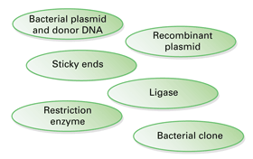
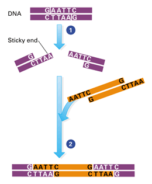
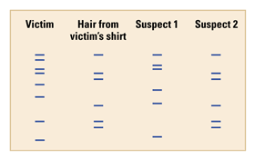

Reviewing Concepts
Multiple Choice
Choose the letter of the best answer.
1. Which of the following is not a way that bacteria obtain new combinations of genes?
a. Two bacteria join together and one passes genes to the other.
b. Bacteria produce haploid gametes that undergo fertilization.
c. Viruses carry bacterial genes from one cell to another.
d. Bacteria take up free pieces of DNA from their environment.
2. Which tool do biologists use to cut a section of DNA from a chromosome?
a. plasmids
b. restriction enzymes
c. nucleic acid probes
d. genetic markers
3. Why would a scientist use a nucleic acid probe?
a. to test for the presence of a certain gene
b. to build a genomic library
c. to cut DNA
d. to introduce new genes into other cells
4. Which of the following would be considered a transgenic organism?
a. a plant grown in culture from a single plant cell
b. a human treated with insulin produced by E. coli bacteria
c. a sheep developed from an egg cell fertilized in the laboratory
d. a sheep that produces a cow protein
5. Why do scientists use gel electrophoresis?
a. to build a genomic library
b. to inject a gene into a fertilized egg
c. to mass-produce a specific segment of DNA
d. to compare DNA samples from different sources
6. What might a scientist examine to determine whether a person is a carrier for a genetic disorder?
a. cellular differentiation
b. recombinant plasmids
c. operons
d. genetic markers
Short Answer
7. What is a plasmid? Describe one way in which biologists use plasmids as a tool in genetic engineering.
8. In making recombinant DNA, what is the benefit of using a restriction enzyme that cuts DNA in a staggered fashion?
9. How do scientists locate a specific gene in a genomic library?
10. Give examples of at least two useful products from genetically engineered microorganisms.
11. Contrast a genetically modified animal with a cloned animal.
12. What is PCR? Give examples of its uses.
13. During gel electrophoresis do larger or smaller molecules move faster? Explain.
14. Why is it helpful to use genetic markers from noncoding regions when comparing DNA fingerprints as evidence in court?
15. Explain how the lac operon is regulated.
16. What is a homeotic gene?
Visualizing Concepts
17. Using the terms in the ovals below, create a flowchart to show the sequence of steps involved in cloning a gene using recombinant bacterial plasmids.

Applying Concepts
Analyzing Information
18. Analyzing Diagrams Use the diagram to answer the questions below.
a. Describe what is happening in Step 1.
b. Describe what is happening in Step 2.

19. Analyzing Data This gel shows results of DNA fingerprinting in a criminal case.
a. Give a reason why the restriction enzyme treatment produced different lengths of fragments for the victim and each suspect.
b. Does the DNA evidence indicate that either suspect was present at the scene of the crime? Explain.

Critical Thinking
20. Comparing and Contrasting Distinguish between two different "cloning" techniques discussed in this chapter.
21. Problem Solving A scientist has collected a genomic library using just one restriction enzyme. She fails to locate the desired gene using a nucleic acid probe. She tries a different restriction enzyme. Suggest why her first attempt might have failed and why her second might succeed.
22. Comparing and Contrasting Compare and contrast the procedures for producing genetically modified plants and animals.
23. Making Generalizations Your nerve cells and skin cells contain the same genes. Explain why these cells are different.
24. What's Wrong With These Statements?
Briefly explain why each statement is inaccurate or misleading.
a. PCR is a technique by which living cells make many copies of a segment of DNA.
b. Each of your cells expresses your genome.
c. The lac operon is the gene that makes lactose in E. coli.
Performance Assessment
Design an Experiment A scientist is attempting to clone a cow. The female cow into which the altered embryo is implanted eventually gives birth to two calves, indicating that the cow was already carrying an embryo when the altered one was implanted. Explain how you could detect which calf is the clone.